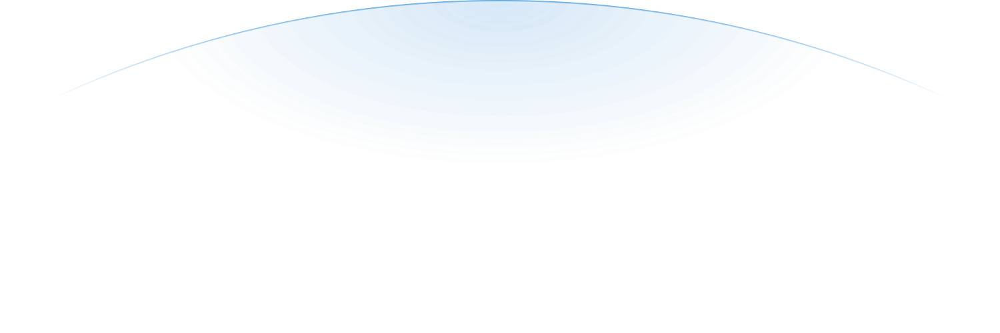

Accessibility auditing traditionally happens late in the software development lifecycle, after code is deployed. Fixing accessibility bugs post-launch is expensive, time-consuming, and often delays releases:
Designers have no fast way to check compliance before handoff.
Developers inherit accessibility debt they didn’t create, and AI-based checkers offer opinions instead of verifiable numbers.
A rulebook nobody checked until it was too expensive to fix cheaply.
We shifted accessibility checks “left” into the design and pre-code phase, a hybrid system that pulls elements directly from live web pages, design tools like Figma, or screenshots, then measures them against the official WCAG rulebook, not AI opinion.
Input → Find the Elements. The system needs to know where every button, heading, image, and text block sits before it can check anything, and this is designed to degrade gracefully: a live URL gets a real headless browser reading the actual DOM; a Figma link reads the real design node tree; an uploaded screenshot falls back through Gemini Vision, then a self-hosted CV model, then an offline pixel grid that always works. The tool never fails silently.
Measure → Check → Report. Every element gets real pixel measurements run through the official WCAG luminance formula, checked against a lookup table of thresholds and exceptions, then reported with hard evidence, the violated criterion, a plain-English impact, and, for contrast, a suggested fix color.
What’s on screen.
The Decile-Core method.
• Sorts every pixel in the bounding box, dark to light
• Averages the darkest/lightest 10%, drops the noisy middle
• Runs the real WCAG luminance formula, not a guess
Deterministic, not AI.
• Contrast, tap targets, heading order, alt text, focus outlines
• Checked against official WCAG 2.2 thresholds
• Official exceptions applied first, so it never cries wolf
Measured vs. Predicted.
• Every finding tagged by confidence, not blended in
• Evidence, criterion, and plain-English impact, every time
• Ready-to-use Figma comments and dev tickets
Hears and highlights, element by element, exactly what a screen reader would announce moving through the page, so a missing or wrong label gets caught by listening, not by guessing.
Steps through the page in the same sequence a keyboard-only user's cursor would move, numbered and autoplayable, so a broken or illogical tab order is obvious before a real user ever hits it.
Every result comes with a plain-English impact statement and a confidence tag, so a designer or developer can act on it directly instead of waiting on an audit they can't interpret themselves.
Every finding is backed by real measured pixel data and the exact WCAG criterion it violates, the same evidence a real accessibility audit would hold up to.
Finds every button, heading, image, and text block before checking anything, and degrades gracefully depending on the input: a live URL gets a real headless browser reading the actual DOM; a Figma link reads the real design node tree; an uploaded screenshot falls back through Gemini Vision, a self-hosted CV model, then an offline pixel grid that always works. The tool never fails silently.

Sorts every pixel inside an element’s bounding box from darkest to lightest, averages the darkest 10% (the “ink”) and lightest 10% (the “paper”), and discards the noisy middle 80%. Those two averaged colors run through the official WCAG luminance formula for a real, statistically robust contrast ratio, not a single fragile pixel sample.
Every measurement is checked against a lookup table of official WCAG 2.2 thresholds, contrast, tap target size, heading order, alt text, button names, focus outlines, with official exceptions applied first so nothing legitimately exempt gets flagged. Each finding is then tagged Measured (real data) or Predicted (best-effort inference), and ships with its exact evidence, the violated criterion, a plain-English impact statement, and a suggested fix color.
Moves accessibility audits from post-launch firefighting into early design-phase prevention, catching barriers before a line of code ships.
Replaces vague AI predictions with verifiable WCAG math and clear confidence tags, building trust with both engineering and design teams.
Delivers pre-formatted Figma comments and developer tickets directly into existing workflows, with every finding labeled Measured or Predicted.
Together, these shift accessibility from a late, reactive scramble into an early, trusted, and continuously measurable part of the design process.